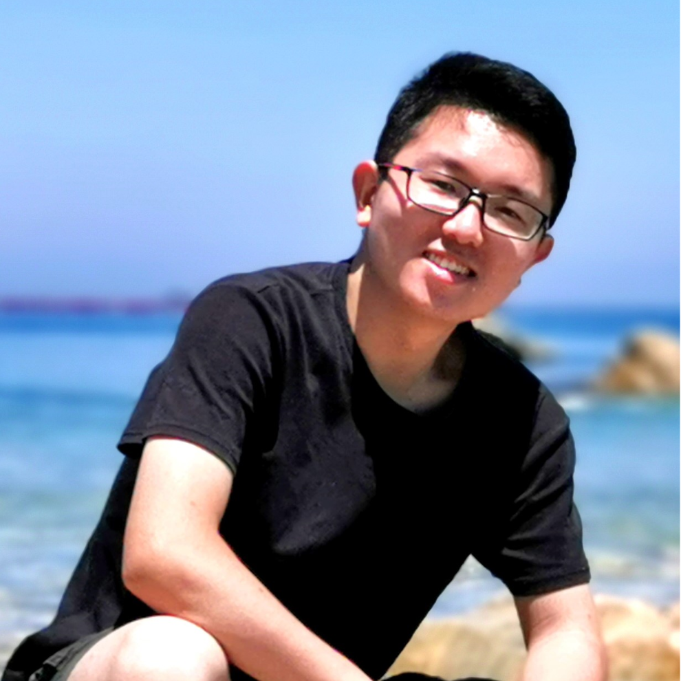
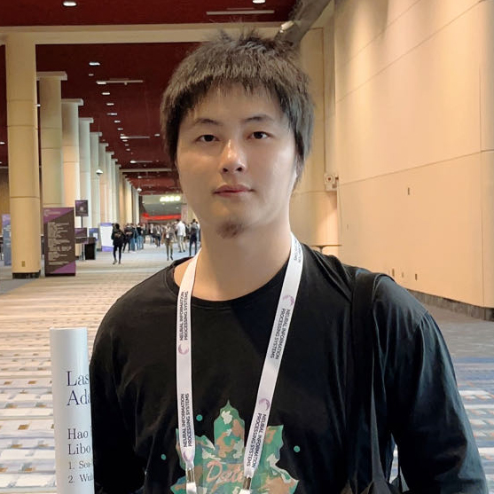

👋, Welcome to
NLP Academic Exchange Platform.

Introduction
NICE（NLP Academic Exchange Platform）是一个专门面向中文NLP领域的青年学者学术交流平台，由众多高校一线科研同学共同创建。
在ChatGPT时代下论文的idea日新月异，旨在做一个能够每周及时分享最新的、最有意义的前沿论文平台。希望能做到一个承上启下的作用，既能帮助学者分享自己的学术成果、跳出自己的圈子认识其他伙伴的同时，又能带动更年轻的未来学者顺利进入NLP的殿堂，一起促进国内NLP的蓬勃发展。
Sponsor
Videos
公众号: NICE学术

bilibili: NICE学术

committees
甄冉冉
苏州大学博士生
张鑫
哈尔滨工业大学(深圳)博士生章岳
字节跳动研究员
李映辉
清华大学博士生王鸿儒
香港中文大学博士生
薛博阳
香港中文大学博士生华文越
UCSB 博士后

王存翔
清华大学博士后 智谱研究员聂耳聪
慕尼黑大学博士生李磊
香港大学博士生饶珈源
上交&上海AI Lab博士生赵皓东
上海交通大学博士生王梦如
浙江大学博士生魏来
上海交通大学博士生
苏肇辰
苏州大学研究生香港科技大学准博士生
senior committees

费豪
新加坡国立大学 研究员张倬胜
上海交通大学 长聘教轨助理教授柳泽明
北京航空航天大学 助理教授
谢伟迪
上海交通大学长聘轨副教授上海AI Lab青年科学家
牛津大学VGG访问研究员
陈科海
哈尔滨工业大学(深圳) 教授吴郦军
上海AI Lab青年科学家张辉帅
北京大学 王选计算机研究所 助理教授张宁豫
浙江大学 副教授
傅金兰
新加坡国立大学 研究员Website Maintainers
胡依璐
苏州大学硕士生-
公众号
NICE学术
-
bilibili
NICE学术